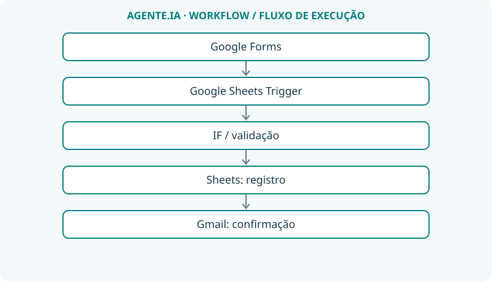

Lab 02 — Google Forms + Sheets + Gmail — inscrições
Receber inscrições, validar os campos e confirmar por e-mail sem LLM.
Objetivo
Receber inscrições, validar os campos e confirmar por e-mail sem LLM.
Pré-requisitos: acesso autorizado ao servidor n8n, workflow privado de teste e dados sintéticos. As integrações externas requerem credenciais próprias e autorização administrativa; não altere a instância compartilhada.
Arquitetura

Arquivos e simulação
Workflow JSON importável (simulação) · Entrada JSON · Regra JavaScript · Catálogo CSV · Estoque CSV · Frequência CSV · Fontes sintéticas · Contrato de skill · Casos de teste da coleção · Script de testes locais · Guia de execução
Importe o JSON pelo menu do editor, execute manualmente e examine a saída do último nó. Este arquivo executa somente uma regra de demonstração com dados fictícios. Ele não envia mensagens, não acessa serviços e não contém credenciais. As etapas seguintes são a implementação real guiada.
{
"id": "INS-01",
"nome": "Ana Teste",
"email": "ana@example.test",
"curso": "C001"
}function avaliar(p){return {status:p.id&&p.nome&&typeof p.email==='string'&&/^[^@\s]+@[^@\s]+\.[^@\s]+$/.test(p.email)&&p.curso?'recebido':'invalido',id:p.id};}
Implementação real passo a passo
- Crie um Forms de teste com nome fictício, e-mail de teste e curso. Vincule as respostas à planilha e crie aba inscricoes com campos id, nome, email, curso, status.
- Configure OAuth2 Google no n8n (seção 5); use credenciais próprias e apenas arquivos de laboratório.
- Adicione Google Sheets Trigger, evento de linha adicionada, e selecione a aba de respostas. O trigger consulta alterações conforme sua configuração; teste manualmente com uma nova resposta.
- Mapeie Nome, E-mail e Curso no Edit Fields para nome, email, curso. Use Code ou IF para exigir os três campos; gere id estável a partir de um identificador persistente da inscrição, não de horário de reexecução.
- Use Google Sheets: Append or Update Row, correspondência por id, em inscricoes. Crie IF para encaminhar apenas registros válidos ainda não confirmados. Gmail: Send, destinatário email, assunto Inscrição recebida, corpo com curso e protocolo. Use apenas seu e-mail de teste.
- Registre confirmado após envio e teste reexecução. Para produção, use banco com chave única e estado de envio; Sheets não garante exclusão mútua.
Configuração dos nós no editor
Crie formulário e planilha em conta autorizada. IDs e e-mails fictícios; troque apenas destinatário por sua caixa de teste. Um Sheets sozinho não garante atomicidade.
| Nó | Parâmetros e mapeamento | Saída esperada |
|---|---|---|
| Google Sheets Trigger | Row Added; aba de respostas Forms | Resposta de formulário |
| Edit Fields | Mapear id persistente, nome, email, curso | Campos normalizados |
| IF | Campos obrigatórios e curso cadastrado | Rejeitar entrada inválida |
| Google Sheets | Append or Update Row; match id; aba inscricoes | Registro rastreável |
| Gmail | Send; destinatário de teste; assunto inscrição | Confirmação após registro |
Execução e evidências
- Duplique o fluxo de simulação; monte os nós na ordem do diagrama e da tabela. Guarde credenciais no editor, não no código.
- Execute os nós individualmente, confira o JSON de entrada e saída e depois execute o fluxo completo em ambiente de teste.
- Registre em tabela entrada, resultado esperado, observado, duração, versão e evidência. Desative o fluxo e revogue credenciais de teste ao concluir.
| Caso de teste | Critério de aceitação |
|---|---|
| INS-01 válido | registrado e confirmação de teste |
| curso vazio | sem envio |
| mesmo ID | não reenviar; reconciliar estado |
Integração com eventos e Webhooks (V218)
Forms pode alimentar Sheets; quando usar Google Sheets Trigger, verifique se a configuração utiliza polling. Apps Script pode enviar evento autenticado ao webhook. Consulte o Lab 05 e o Lab 11.
Testes e avaliação
| Entrada / cenário | Resultado esperado |
|---|---|
| campos válidos | recebido |
| email sem @ | invalido; não enviar |
| id repetido | não repetir notificação; validar no fluxo real |
Diagnóstico: erro de autenticação → confira credencial e escopo; erro de conectividade → solicite ao administrador verificação de DNS/TLS/rede; erro de mapeamento → inspecione o JSON do nó anterior; quota → interrompa e replaneje. Não tente contornar políticas do serviço.
Entregáveis: export JSON sem credenciais, desenho do fluxo, evidências de pelo menos três testes, registro de falhas, avaliação de risco e explicação de quando não usar IA. Rubrica: configuração 2, funcionamento 3, testes 2, segurança 2, reflexão 1.